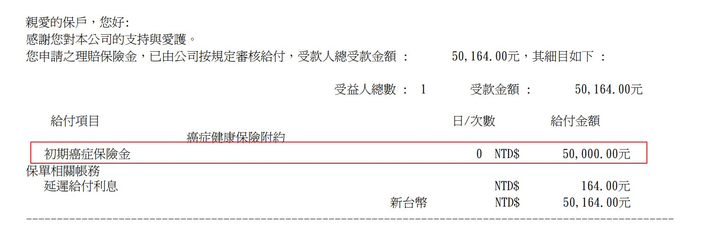
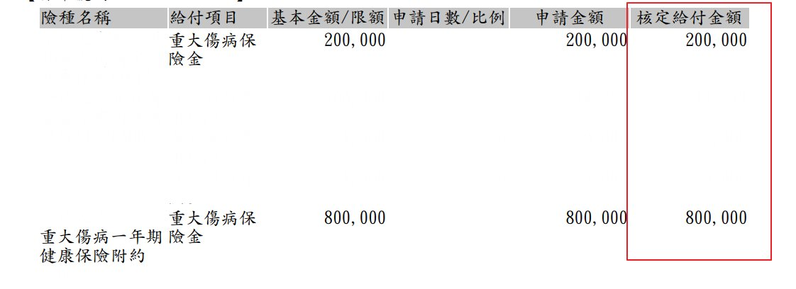
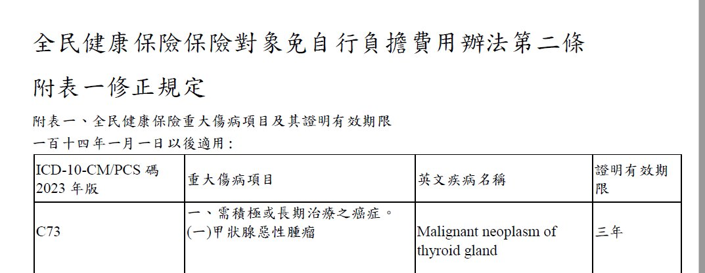
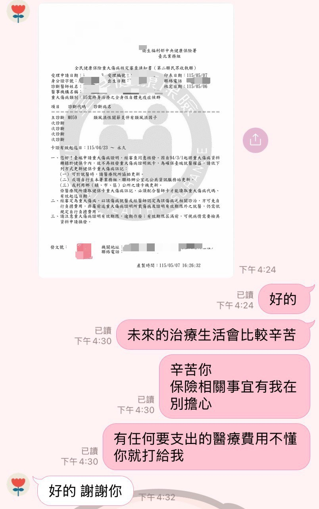

預算有限時
它的順位應該排在癌症險前面
做保險這幾年，我陪著客戶走過 5 次重大傷病的理賠申請。每一次「重大傷病證明」核發下來，背後都是一個家庭真實的辛苦。也正因為這 5 個案例，我越來越確定一件事——當預算有限、沒辦法兩種都買的時候，重大傷病險的規劃順位，應該排在癌症險前面。
健保署 114 年 11 月統計
就有 1 人，領有重大傷病證明
「重病嘛，先把癌症險買起來就好」
「重大傷病險，聽起來不就是癌症險的另一個名字？」
癌症險只保「癌症」這一種病
重大傷病涵蓋的，遠遠不只癌症
接下來這個案例，來自我服務過的一位客戶——真實的理賠通知，個資已隱去。看完你就會明白，為什麼這兩張保單，賠起來差這麼多。
我有一位客戶，確診口腔癌，屬於初期、程度輕微。幸運的是，他當初同時規劃了「癌症險」和「重大傷病險」。後來兩張保單都申請了理賠——結果的差距，連我自己都印象深刻。

這位客戶的癌症險保額是 100 萬，並不低。但癌症險多半採「分級給付」——理賠金額會依癌症的嚴重程度分級。以這張保單為例：初期賠 5 萬、輕度賠 15 萬，要到重度才賠到 100 萬足額。他的口腔癌屬於初期，因此只啟動到「初期癌症保險金」這一級，實際給付就是 5 萬元。
投保保額 100 萬，但分級給付下，初期癌症只對應到第一級的 5 萬。
採分級給付，初期癌症只動用到「初期癌症保險金」這一級

重大傷病險不分級。只要拿到健保署核發的「重大傷病證明」、符合保單條款的範圍，保險公司就把保額整筆賠下來，不會因為是初期癌症就打折。這位客戶兩張重大傷病保障加起來，一口氣理賠了 100 萬元。
取得重大傷病證明，整筆給付，不分輕度重度
同一個人 · 同一場口腔癌
癌症險賠了
5 萬
分級給付 · 初期癌症
重大傷病險賠了
100 萬
憑證明 · 整筆給付
不是癌症險不好，而是同樣一場病，兩張保單的「給付邏輯」完全不同。這個差距，是這篇文章最重要的一句話。
理賠金額會差到 20 倍，不是哪一家保險公司比較小氣，而是這兩種保單天生就用不同的方式賠錢。搞懂這一點，你就會知道規劃時該怎麼排順序。
現在常見的癌症險，多半把癌症分成原位癌、初期、輕度、重度等不同等級，等級不同、賠的比例就不同。初期癌症通常只給一小筆「初期癌症保險金」，要到重度才會拿到較完整的金額。它的好處是連很輕微的癌症也賠得到、也能針對化放療、住院等療程設計給付——但遇到初期癌症，金額自然不會多。
重大傷病險不看嚴重程度分級。只要健保署核發了「重大傷病證明」、符合保單條款列的範圍，保險公司就把保額整筆給付。初期癌症也好、重度癌症也好，只要證明拿得到，賠的金額是一樣的。這也是為什麼同一場初期癌症，重大傷病險可以賠到 100 萬。
一句話記住差別
癌症險問你「病多嚴重」
重大傷病險只問你「有沒有那張證明」
很多人以為重大傷病險就是「比較貴的癌症險」。其實它的保障範圍，是以健保署公告的「重大傷病項目」為基礎——而那份清單，涵蓋的疾病非常廣。

健保署公告的重大傷病項目，總共有 30 大項、超過 300 種疾病。市面上的重大傷病險，多以這份清單為基礎承保，一般會排除先天性、遺傳性疾病與職業病等約 8 類，實際保障約 22 大類——確切範圍仍以各保單條款為準。下面從健保重大傷病清單中，列舉一些我們比較常聽見的重症：
市面上有三種名字很像、但其實不一樣的保單，很多人會買錯。投保前請看清楚保單條款上的險種名稱：
三者名稱接近、保障邏輯卻不同。如果你要的是「憑健保重大傷病證明就理賠」的這種，請認明重大傷病險，不要誤買成重大疾病險或特定傷病險。
完整清單可查健保署官網：全民健康保險重大傷病項目。重點是——癌症險只保癌症這一種病；重大傷病險一張保單，把上面這 300 多種重大疾病一次涵蓋進來。
回到開頭說的 5 張重大傷病卡。把這 5 個理賠案例攤開來看，你會發現一個值得思考的事實——其中大多數，根本不是癌症。
多處骨折，達到「重大創傷」創傷嚴重程度 16 分以上的標準，因此取得重大傷病證明。
確診後符合「需積極或長期治療之癌症」，取得重大傷病證明。
經診斷符合健保重大傷病範圍，取得重大傷病證明。
兩場車禍、一個罕見疾病——這 3 位客戶如果當初只買了癌症險，這一塊保障就是 0。是重大傷病險，在他們最需要的時候，把這筆錢補了上來。意外與重病不會先挑過你買了哪張保單，這就是為什麼「範圍夠廣」這件事這麼重要。

如果預算充足，重大傷病險和癌症險兩個都規劃是最理想的。但如果預算有限、必須有先後——我的建議是這樣：
它保障範圍最廣、憑證明就能申請、而且整筆給付。先用它把 300 多種重大疾病的風險一次守住，是最有效率的第一步。
建議額度至少 100 萬，預算允許者拉到 200 萬癌症是長期抗戰，治療常拖上好幾年。癌症險針對化放療、標靶、住院等療程設計，能在漫長療程中持續補位；部分極早期癌症或原位癌不一定符合重大傷病標準，這時也靠癌症險接手。
建議額度至少 100 萬這兩張保單不是互相取代，而是互相補位。重大傷病險負責「範圍」——把各種重病一次守住、確診就有一筆現金；癌症險負責「深度」——陪你走完癌症那條最燒錢、最漫長的療程。預算足夠的話，兩者都規劃，保障才完整。
順序對了，每一塊預算才花在刀口上
先求保障範圍夠廣，再求單一重病夠深
範圍最廣、憑證明整筆給付，建議 100 萬以上
陪你走完最燒錢的癌症療程，建議 100 萬以上